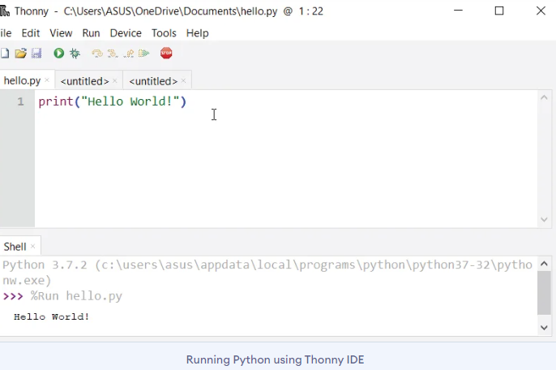
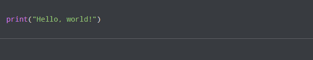
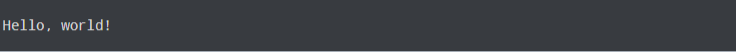

Getting started with Python: Introduction
What is Python exactly?
Python is a cross-platform programming language, which means that it can run on multiple platforms like Windows, macOS, Linux, and has even been ported to the Java and .NET virtual machines. It is free and open-source.
Even though most of today's Linux and Mac have Python pre-installed in it, the version might be out-of-date. So, it is always a good idea to install the most current version.
The Easiest Way to Run Python
The easiest way to run Python is by using Thonny IDE.
The Thonny IDE comes with the latest version of Python bundled in it. So you don't have to install Python separately.
Follow the following steps to run Python on your computer.
- Download Thonny IDE.
- Run the installer to install Thonny on your computer.
- Go to: File > New. Then save the file with .py extension. For example, hello.py, example.py, etc.
You can give any name to the file. However, the file name should end with .py - Write Python code in the file and save it
 - Then Go to Run > Run current script or simply click F5 to run it.
Your first Python Program
Now that we have Python up and running, we can write our first Python program.
Let's create a very simple program called Hello World. A "Hello, World!" is a simple program that outputs Hello, World! on the screen. Since it's a very simple program, it's often used to introduce a new programming language to beginners.
Type the following code in any text editor or an IDE and save it as hello_world.py
Then, run the file. You will get the following output
Congratulations! You just wrote your first program in Python.
As you can see, this was a pretty easy task. This is the beauty of the Python programming language.
INDEX
print() : A keyword in Python programming language, used for output.
IDE : Integrated Development Environment. It is a software application that provides comprehensive tools and features to assist software developers in writing, testing, and debugging code.